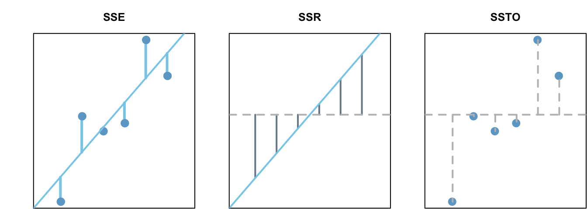

Simple Linear Regression
True \(Y\), Observed \(Y\), and Estimated \(Y\)
Simple linear regression means that there is only a single variable (not multiple \(X\)’s)
\(X\) - A single quantitative explanatory variable (independent)
\(Y\) - A single quantitative response variable (dependent)
The True Regression Line
\[ E\{Y\} = \beta_0 + \beta_1 X_i \]
\(E\{Y\}\) - True mean y-value, also \(\mu_{Y|X}\) or \(E\{Y|X\}\)
\(\beta_0\) - True \(y\)-intercept
\(\beta_1\) - True slope
The Observed Points
\[ Y_i = \beta_0 + \beta_1 X_i+ \epsilon_i = b_0 + b_1X_i + r_i \]
\(Y_i\) - Response or dependent variable for the \(i^{\text{th}}\) observation.
\(\epsilon_i\) - Error, distance of dot to true line. \(\epsilon_i = Y_i - E\{Y\}\)
\(r_i\) - Residual, distance of dot to estimated line. \(r_i = Y_i - \hat{Y}_i\)
The Estimated Regression Line obtained from a regression analysis from the observed points
\[ \hat{Y}_i = b_0 + b_1 X_i \]
\(\hat{Y}_i\) - The fitted line
\(b_0\) - Estimated \(y\)-intercept, also \(\hat{\beta}_0\)
\(b_1\) - Estimated slope, also \(\hat{\beta}_1\)
Assumption for Simple Linear Regression
If we are to make a model off the points displayed as such:
\[ Y_i = \beta_0 + \beta_1 X_i+ \epsilon_i \]
We need to confirm the following assumptions
1) Linear relation: Linear relationship between \(X\) and \(Y\)
2) Normal errors: \(\epsilon \sim \mathcal{N}(0,\sigma^2)\), the error terms are normally distributed with a mean of 0
3) Constant variance: The variance \(σ^2\) of the error terms is constant (the same) across all values of \(X_i\)
4) Fixed \(X\): the \(X\) values can be considered fixed and measured without error
5) Independent errors: \(\epsilon\) is independent
\(Y_i = \beta_0 + \beta_1 X_i+ \epsilon_i :\epsilon \sim \mathcal{N}(0,\sigma^2)\)
Given \(X\), \(Y \sim \mathcal{N}(\beta_0 +\beta_1X,\sigma^2)\)
Making the Estimated Regression Line
The estimated regression line or line of best fit from the observed points is represented by the equation \(\hat{Y}_i=b_0+b_1X_i\) , where \(b_1\) is the estimated slope of the line and \(b_0\) is the estimated y-intercept.
Minimizing Residuals
A single residual, \(r_i\), is the distance between an observed point and the estimated regression line. Given any line, we can calculate how different our predicted value, \(\hat{Y_i}\) is from our actual data point, \(Y_i\). This vertical distance from the real y output and the predicted y output is called the residual. The formula for any given residual is represented as such
\[ \begin{align*} r_i &= Y_i-\hat{Y}_i\\ r_i &= Y_i - (b_0+b_1X_i) \end{align*} \]
The goal of simple linear regression is to minimize the sum of the squared errors (\(\text{SSE}\)). This is represented by the equations:
\[ \begin{align*} \text{SSE} &= \sum_{i=1}^n \left(r_i\right)^2 \\ \text{SSE} &= \sum_{i=1}^n\left(Y_i - \hat{Y_i}\right)^2\\ \text{SSE} &= \sum_{i=1}^n\left(Y_i - (b_0+b_1X_i)\right)^2 \end{align*} \]
The closer any given line is to the best fit line, the lower the \(\text{SSE}\) will be. In fact, the best fit line represents the line with the lowest possible \(\text{SSE}\). This line is found by manipulating the values for \(b_0\) and \(b_1\) since the \(X\) values must stay the same.
The Calculus Behind Best Fit
There exists a combination of \(b_0\) and \(b_1\) that is the lowest. Geometrically, we can imagine a shape in three dimensions where two inputs (\(b_0\) and \(b_1\)) produce an output (\(\text{SSE}\)). Roughly speaking, where the three dimensional slope is equal to 0 is where the combination of \(b_0\) and \(b_1\) will produce the lowest possible \(\text{SSE}\). Since the derivative of an equation can tell us the slope at any given point, we can set both equations’ derivatives to zero to find where slope is zero for both equations.
Step One: Take the partial derivatives with respect to \(b_0\) and \(b_1\)
The partial derivative with respect to \(b_0\) is calculated as so:
\[\frac{\partial}{\partial b_0}\sum_{i=1}^n\left(Y_i - (b_0+b_1X_i)\right)^2\] \[ \begin{align*} \mathscr{} &= \sum_{i=1}^n\frac{\partial}{\partial b_0}\left(Y_i - (b_0+b_1X_i)\right)^2 &\text{Sum Rule}\\ &= \sum_{i=1}^n2\left(Y_i - (b_0+b_1X_i)\right)\frac{\partial}{\partial b_0}\left(Y_i - (b_0+b_1X_i)\right) &\text{Power Rule}\\ &= \sum_{i=1}^n 2\left(Y_i - (b_0+b_1X_i)\right)(-1) &\text{Simplify}\\ &= -2\sum_{i=1}^n\left(Y_i - (b_0+b_1X_i)\right) &\text{Constant Multiple Rule for Sums} \end{align*} \]
The partial derivative with respect to \(b_1\) is calculated as so:
\[\frac{\partial}{\partial b_1}\sum_{i=1}^n\left(Y_i - (b_0+b_1X_i)\right)^2\] \[ \begin{align*} \mathscr{} &= \sum_{i=1}^n\frac{\partial}{\partial b_1}\left(Y_i - (b_0+b_1X_i)\right)^2 &\text{Sum Rule}\\ &= \sum_{i=1}^n2\left(Y_i - (b_0+b_1X_i)\right)\frac{\partial}{\partial b_1}\left(Y_i - (b_0+b_1X_i)\right) &\text{Power Rule}\\ &= \sum_{i=1}^n 2\left(Y_i - (b_0+b_1X_i)\right)(-X_i) &\text{Simplify}\\ &= -2\sum_{i=1}^nX_i\left(Y_i - (b_0+b_1X_i)\right) &\text{Constant Multiple Rule for Sums} \end{align*} \]
Step Two: Set the simplified partial derivatives to zero and solve for \(b_0\) and \(b_1\) respectively
Solving for \(b_0\): \[0 = -2\sum_{i=1}^n\left(Y_i - (b_0+b_1X_i)\right)\]
\[ \begin{align*} \mathscr{} &0 = \sum_{i=1}^n\left(Y_i - b_0-b_1x_i\right) &\text{Simplify}\\ &0 = \sum_{i=1}^nY_i - \sum_{i=1}^nb_0-\sum_{i=1}^nb_1X_i &\text{Sum Rule}\\ &0 = \sum_{i=1}^nY_i - nb_0-b_1\sum_{i=1}^nX_i &\text{Constant Multiple Rule for Sums}\\ & nb_0 = \sum_{i=1}^nY_i -b_1\sum_{i=1}^nX_i &\text{Simplify}\\ & b_0 = \frac{\sum_{i=1}^nY_i}{n} -\frac{b_1\sum_{i=1}^nX_i}{n} &\text{Simplify}\\ & b_0 = \bar{Y} - b_1\bar{X} &\text{Simplify to average}\\ \end{align*} \]
Solving for \(b_1\) while substituting \(b_0\):
\[0 = -2\sum_{i=1}^nX_i\left(Y_i - (b_0+b_1X_i)\right)\] \[ \begin{align*} \mathscr{} &0 = \sum_{i=1}^nX_i\left(Y_i - ((\bar{Y} - b_1\bar{X})+b_1X_i)\right) &\text{Substitute }b_0\\ &0 = \sum_{i=1}^nX_i(Y_i-\bar{Y}) - \sum_{i=1}^nb_1X_i(X_i-\bar{X})&\text{Sum Rule}\\ &0 = \sum_{i=1}^nX_i(Y_i-\bar{Y}) - b_1\sum_{i=1}^nX_i(X_i-\bar{X})&\text{Constant Multiple Rule for Sums}\\ & b_1= \frac{\sum_{i=1}^nX_i(Y_i-\bar{Y})}{\sum_{i=1}^nX_i(X_i-\bar{X})} &\text{Simplify}\\ & b_1= \frac{\sum_{i=1}^n(X_i-\bar{X})(Y_i-\bar{Y})}{\sum_{i=1}^n(X_i-\bar{X})^2} &\text{Simplify (steps skipped)}\\ \end{align*} \]
Step Three: Construct the formula
Once you have found \(b_0\) and \(b_1\) as so:
\(b_0 = \bar{Y} - b_1\bar{X}\)
\(b_1= \frac{\sum_{i=1}^n(X_i-\bar{X})(Y_i-\bar{Y})}{\sum_{i=1}^n(X_i-\bar{X})^2}\)
(\(\bar{Y}\) represents the mean of the \(Y\) values and \(\bar{X}\) represents the mean of the \(X\) values)
We can construct the formula for \(\hat{Y}_i\) as the following:
\[\hat{Y}_i = b_0 + b_1X_i\] Which means \(b_0\) is the change in the mean of \(Y\) for a \(1\) unit increase in \(X\).
Assessing the Estimated Regression Line
Terms
Sum of Squared Errors
Measures how much the residuals deviate from the line.
\(\text{SSE} = \sum_{i=1}^n \left(r_i\right)^2 = \sum_{i=1}^n\left(Y_i - \hat{Y_i}\right)^2\)
Sum of Squares Regression
Measures how much the regression line deviates from the average y-value.
\(\text{SSR} = \sum_{i=1}^n \left(r_i\right)^2 = \sum_{i=1}^n\left(\hat{Y}_i - \bar{Y}\right)^2\)
Total Sum of Squares
Measures how much the y-values deviate from the average y-value.
\(\text{SSTO} = \sum_{i=1}^n \left(Y_i - \bar{Y}\right)^2\)

\(\text{SSTO}=\text{SSE}+\text{SSR}\)
Calculating the Coefficient of Determination
Using the terms above, we can calculate a ratio of the variance of \(Y\) explained by the estimated regression line (\(\text{SSE}\)) and the total variance of \(Y\) from the average \(Y\) value (\(\text{SSTO}\).
\[ R^2 = 1-\frac{\text{SSE}}{\text{SSTO}} \]